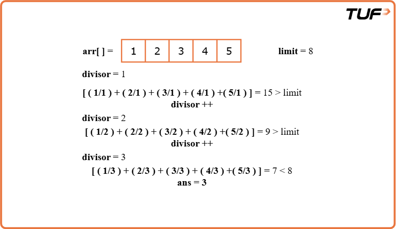
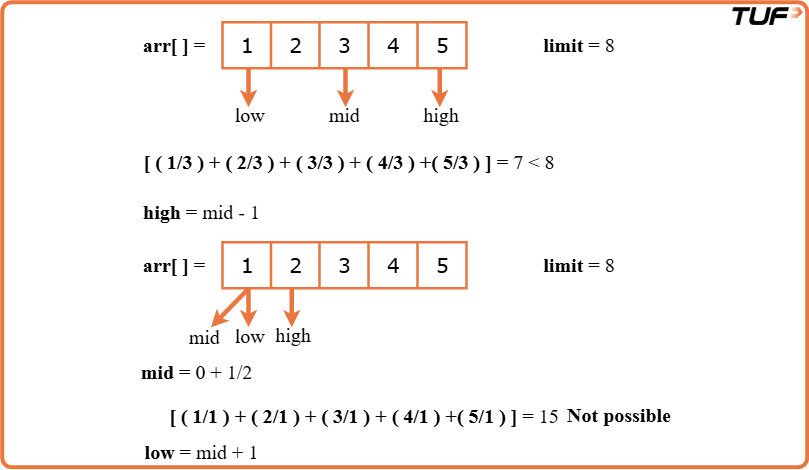
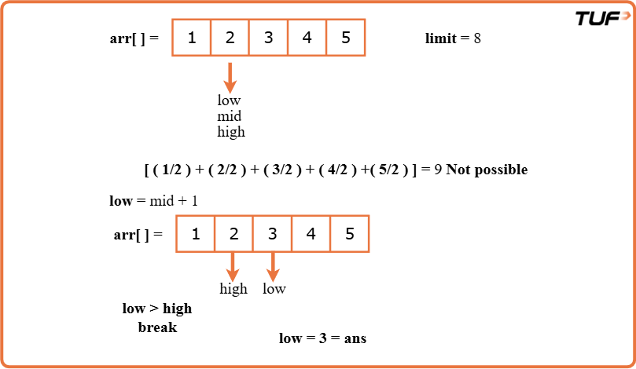

Find the Smallest Divisor Given a Threshold
Problem Statement: You are given an array of integers 'arr' and an integer i.e. a threshold value 'limit'. Your task is to find the smallest positive integer divisor, such that upon dividing all the elements of the given array by it, the sum of the division's result is less than or equal to the given threshold value.
Examples
Example 1:
Input Format: N = 5, arr[] = {1,2,3,4,5}, limit = 8
Result: 3
Explanation: We can get a sum of 15(1 + 2 + 3 + 4 + 5) if we choose 1 as a divisor.
The sum is 9(1 + 1 + 2 + 2 + 3) if we choose 2 as a divisor. Upon dividing all the elements of the array by 3, we get 1,1,1,2,2 respectively. Now, their sum is equal to 7 <= 8 i.e. the threshold value. So, 3 is the minimum possible answer.
Example 2:
Input Format: N = 4, arr[] = {8,4,2,3}, limit = 10
Result: 2
Explanation: If we choose 1, we get 17 as the sum. If we choose 2, we get 9(4+2+1+2) <= 10 as the answer. So, 2 is the answer.
Disclaimer: Here is the practice link to help you assess your knowledge better. It's highly recommend trying to solve it before looking at the solution.
Brute Force
Algorithm
- We will run a loop from 1 to max element of the array to check all possible divisors.
- To calculate the result, we will iterate over the given array using a loop. Within this loop, we will divide each element in the array by the current divisor, and sum up the obtained ceiling values.
- Inside the outer loop, If result <= threshold: We will return d as our answer.
- Finally, if we are outside the nested loops, we will return -1.

Code
#include <bits/stdc++.h>
using namespace std;
class Solution {
public:
// Function to find the smallest divisor such that
// the sum of ceil(arr[i] / d) over all i <= limit
int smallestDivisor(vector<int>& arr, int limit) {
int n = arr.size(); // Size of the array
// Find the maximum element in the array
int maxi = *max_element(arr.begin(), arr.end());
// Try every possible divisor from 1 to maxi
for (int d = 1; d <= maxi; d++) {
int sum = 0;
// For each element, compute ceil(arr[i] / d) and add to sum
for (int i = 0; i < n; i++) {
sum += ceil((double)(arr[i]) / (double)(d));
}
// If the total sum is within the limit, return this divisor
if (sum <= limit) {
return d;
}
}
// If no valid divisor is found, return -1
return -1;
}
};
int main() {
vector<int> arr = {1, 2, 3, 4, 5};
int limit = 8;
Solution obj;
int ans = obj.smallestDivisor(arr, limit);
cout << "The minimum divisor is: " << ans << "\n";
return 0;
}
Complexity Analysis
Time Complexity: O(max(arr[])*N), where max(arr[]) = maximum element in the array, N = size of the array. We are using nested loops. The outer loop runs from 1 to max(arr[]) and the inner loop runs for N times.
Space Complexity: O(1). No extra space used
Optimal Approach
Algorithm
Intuition
We are going to use the Binary Search algorithm to optimize the approach.
Approach
- First, check if the number of elements is already greater than the allowed limit. If so, no answer is possible, so return -1.
- Then, identify the largest number in the list.
- Start with two markers , one at the smallest possible number (1), and another at the largest number in the list.
- Use a loop to narrow down the range. In each step, find the number that is in the middle of the current range.
- Check if using this middle number as a divisor results in a total that is within the allowed limit. This is done using a helper that adds up the rounded-up results of each division.
- If the result is within the allowed limit, it means this number might work, but a smaller one could be better. So, look in the lower half of the current range.
- If the result is too large, it means this number is too small. So, look in the upper half of the range instead.
- Repeat this process until the range closes. The smallest number that works will be pointed to by the left marker, and that's the answer.


Code
#include <bits/stdc++.h>
using namespace std;
class SmallestDivisorFinder {
public:
// Helper function to calculate sum of division results
int sumByD(vector<int>& arr, int div) {
int sum = 0;
for (int num : arr) {
sum += ceil((double)num / div);
}
return sum;
}
// Function to find the smallest divisor
int smallestDivisor(vector<int>& arr, int limit) {
if (arr.size() > limit) return -1;
int low = 1;
int high = *max_element(arr.begin(), arr.end());
// Binary search to find smallest divisor
while (low <= high) {
int mid = (low + high) / 2;
if (sumByD(arr, mid) <= limit) {
high = mid - 1; // Try smaller divisor
} else {
low = mid + 1; // Try larger divisor
}
}
return low;
}
};
int main() {
SmallestDivisorFinder solver;
vector<int> arr = {1, 2, 3, 4, 5};
int limit = 8;
int ans = solver.smallestDivisor(arr, limit);
cout << "The minimum divisor is: " << ans << "\n";
return 0;
}
Complexity Analysis
Time Complexity:O(log(max(arr[]))*N), where max(arr[]) = maximum element in the array, N = size of the array. We are applying binary search on our answers that are in the range of [1, max(arr[])]. For every possible divisor ‘mid’, we call the sumByD() function. Inside that function, we are traversing the entire array, which results in O(N).
Space Complexity: O(1), no extra space is used.